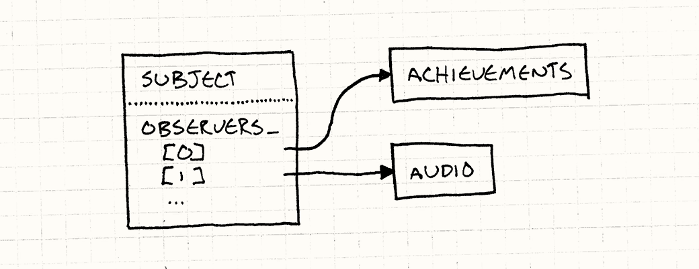
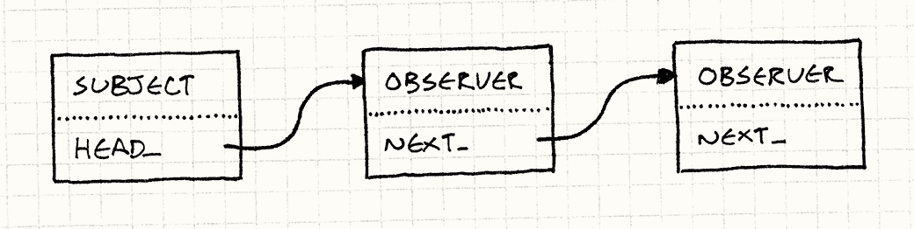
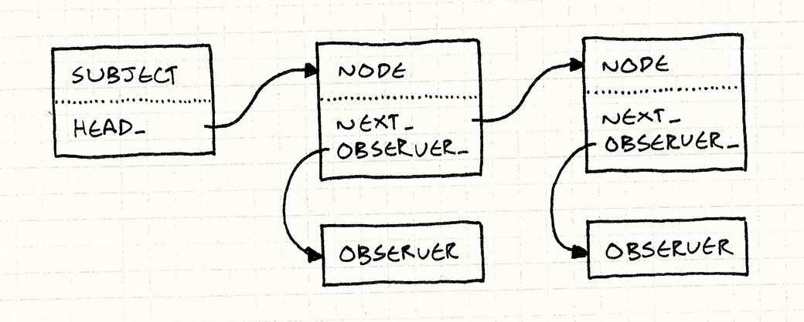

Observer
Game Programming PatternsDesign Patterns Revisited
You can’t throw a rock at a computer without hitting an application built using
the Model-View-Controller architecture, and
underlying that is the Observer pattern. Observer is so pervasive that Java put
it in its core library (java.util.Observer) and C# baked it right into
the language (the event keyword).
你扔一块石头到电脑中，不可能砸不中一个不使用MVC架构的应用，根本在于观察者模式。观察者模式是如此的普遍，Java将其放到了核心库之中，而C#直接将其嵌入了语言。
Observer is one of the most widely used and widely known of the original Gang of Four patterns, but the game development world can be strangely cloistered at times, so maybe this is all news to you. In case you haven’t left the abbey in a while, let me walk you through a motivating example.
观察者模式是最广泛使用和最广为人知的GOF模式，但是游戏开发世界与世隔绝，所以这个也许对你是全新的领域。防止你还没有从修道院中走出来，让我带你走到一个更加形象的例子。
Achievement Unlocked
成就解锁
Say we’re adding an achievements system to our game. It will feature dozens of different badges players can earn for completing specific milestones like “Kill 100 Monkey Demons”, “Fall off a Bridge”, or “Complete a Level Wielding Only a Dead Weasel”.
假设我们向游戏中添加了一个成就系统。它存储了玩家可以完成的各种各样的成就，比如“杀死1000只猴子恶魔”，“从桥上掉下去”，或者“一命通关”。
This is tricky to implement cleanly since we have such a wide range of
achievements that are unlocked by all sorts of different behaviors. If we aren’t
careful, tendrils of our achievement system will twine their way through every
dark corner of our codebase. Sure, “Fall off a Bridge” is somehow tied to the
physics engine, but do we really want to see a call
to unlockFallOffBridge() right in the middle of the linear algebra in our
collision resolution algorithm?
有如此之多的行为可以完成的如此宽泛的成就系统，清晰的实现它是很有技巧的。如果我们不够小心，成就系统会缠绕在我们代码库的每一个黑暗角落。当然，“从桥上掉落”被绑定到物理引擎上，在处理撞击代码的线性代数时有一个对unlockFallOffBridge()的调用不是我们想看到的，对吧？
What we’d like, as always, is to have all the code concerned with one facet of the game nicely lumped in one place. The challenge is that achievements are triggered by a bunch of different aspects of gameplay. How can that work without coupling the achievement code to all of them?
我们喜欢的是，总是，让所有的代码都关注游戏代码中集成的一块。挑战是成就在游戏的不同层面被触发。我们怎么能解耦成就系统和他们呢？
That’s what the observer pattern is for. It lets one piece of code announce that something interesting happened without actually caring who receives the notification.
这就是观察者模式出现的原因。这让代码的一块宣称有些有趣的事情发生了而不必指定谁接受通知。
For example, we’ve got some physics code that handles gravity and tracks which bodies are relaxing on nice flat surfaces and which are plummeting toward sure demise. To implement the “Fall off a Bridge” badge, we could just jam the achievement code right in there, but that’s a mess. Instead, we can just do:
举个例子，我们有一些物理代码处理重力，追踪那些物体轻松待在地表，哪些坠入深渊。为了实现“桥上掉落”的徽章，我们可以直接把成就代码放在那里，但这就会一团糟。相反，我们可以这样做：
void Physics::updateEntity(Entity& entity) { bool wasOnSurface = entity.isOnSurface(); entity.accelerate(GRAVITY); entity.update(); if (wasOnSurface && !entity.isOnSurface()) { notify(entity, EVENT_START_FALL); } }
All it does is say, “Uh, I don’t know if anyone cares, but this thing just fell. Do with that as you will.”
所有他说的就是，“额，我不知道谁感兴趣，但是有东西刚刚掉下去了。做你想做的事吧。”
The achievement system registers itself so that whenever the physics code sends a notification, the achievement system receives it. It can then check to see if the falling body is our less-than-graceful hero, and if his perch prior to this new, unpleasant encounter with classical mechanics was a bridge. If so, it unlocks the proper achievement with associated fireworks and fanfare, and it does all of this with no involvement from the physics code.
成就系统注册它自己，这样无论何时物理代码发送一个通知，成就系统就收到。它可以然后检查掉落的物体是不是我们不那么伟大的英雄，他之前有没有做过这种新的，不愉快的与桥的经典力学遭遇。如果这样，它解锁了合适的成就，伴着礼花和炫光，它做完所有这些而不必牵扯到物理代码。
In fact, we can change the set of achievements or tear out the entire achievement system without touching a line of the physics engine. It will still send out its notifications, oblivious to the fact that nothing is receiving them anymore.
事实上，我们可以改变成就的集合或者删除整个成就系统而不必修改一行物理引擎。它仍然会发送它的通知，哪怕事实上没有东西在接收。
How it Works
它如何运作
If you don’t already know how to implement the pattern, you could probably guess from the previous description, but to keep things easy on you, I’ll walk through it quickly.
如果你还不知道如何实现这个模式，你可能可以从之前的描述中猜到，但是减轻你的负担，我会过一遍代码。
The observer
观察者
We’ll start with the nosy class that wants to know when another object does something interesting. These inquisitive objects are defined by this interface:
我们从那个需要知道别的对象做了什么有趣事情的吵闹类开始。这些好打听的对象用如下接口定义：
class Observer { public: virtual ~Observer() {} virtual void onNotify(const Entity& entity, Event event) = 0; };
Any concrete class that implements this becomes an observer. In our example, that’s the achievement system, so we’d have something like so:
任何实现了这个的具体类成为了一个观察者。在我们的例子中，那是成就系统，所以我们会做些像这样的事。
class Achievements : public Observer { public: virtual void onNotify(const Entity& entity, Event event) { switch (event) { case EVENT_ENTITY_FELL: if (entity.isHero() && heroIsOnBridge_) { unlock(ACHIEVEMENT_FELL_OFF_BRIDGE); } break; // Handle other events, and update heroIsOnBridge_... } } private: void unlock(Achievement achievement) { // Unlock if not already unlocked... } bool heroIsOnBridge_; };
The subject
客体
The notification method is invoked by the object being observed. In Gang of Four parlance, that object is called the “subject”. It has two jobs. First, it holds the list of observers that are waiting oh-so-patiently for a missive from it:
接受观察的对象拥有通知方法，以GoF的说法那些对象被称为“客体”。它有两个工作。首先，它保持默默等待它的观察者列表：
class Subject { private: Observer* observers_[MAX_OBSERVERS]; int numObservers_; };
The important bit is that the subject exposes a public API for modifying that list:
重点是客体暴露了一个公开API来修改这个列表：
class Subject { public: void addObserver(Observer* observer) { // Add to array... } void removeObserver(Observer* observer) { // Remove from array... } // Other stuff... };
That allows outside code to control who receives notifications. The subject communicates with the observers, but it isn’t coupled to them. In our example, no line of physics code will mention achievements. Yet, it can still talk to the achievements system. That’s the clever part about this pattern.
这就允许了外界代码控制谁接收通知。客体与观察者交流，但是不与他们耦合。在我们的例子中，没有一行物理代码会提及成就。现在，它仍然可以与成就系统交流。这就是这个模式的聪慧之处。
It’s also important that the subject has a list of observers instead of a single one. It makes sure that observers aren’t implicitly coupled to each other. For example, say the audio engine also observes the fall event so that it can play an appropriate sound. If the subject only supported one observer, when the audio engine registered itself, that would un-register the achievements system.
客体有一列表观察者而不是一个也是很重要的。这保证了观察者不会相互竞争。举个例子，假设我们的音频引擎也需要观察坠落事件来播放合适的音乐。如果客体只支持一个观察者，当音频引擎注册了它自己，这就会取消成就系统的注册。
That means those two systems would interfere with each other — and in a particularly nasty way, since the second would disable the first. Supporting a list of observers ensures that each observer is treated independently from the others. As far as they know, each is the only thing in the world with eyes on the subject.
这意味着这两个系统需要相互交互——使用一种极其糟糕的方式，由于第二个会使第一个失效。支持一列表的观察者保证了每一个观察者都是与其他独立处理的。他们知道的所有事情是，他是世界上唯一看着客体的东西。
The other job of the subject is sending notifications:
客体的剩余任务就是发送通知：
class Subject { protected: void notify(const Entity& entity, Event event) { for (int i = 0; i < numObservers_; i++) { observers_[i]->onNotify(entity, event); } } // Other stuff... };
Observable physics
可观察物理
Now, we just need to hook all of this into the physics engine so that it can send
notifications and the achievement system can wire itself up to receive them.
We’ll stay close to the original Design Patterns recipe and inherit Subject:
现在，我们只需要给物理引擎绑上钩子，这样他可以发送消息，成就系统可以将它自己接上线来接受他们。我们靠近之前的设计模式秘方，然后继承Subject：
class Physics : public Subject { public: void updateEntity(Entity& entity); };
This lets us make notify() in Subject protected. That way the derived
physics engine class can call it to send notifications, but code outside of it
cannot. Meanwhile, addObserver() and removeObserver() are public, so
anything that can get to the physics system can observe it.
这让我们在Subject中保护的完成notify()。这样推导的物理引擎类可以调用发送通知，但是外部的代码不行。同时，addObserver()和removeObserver()是公开的，所以任何可以接触物理引擎的东西都可以观察它。
Now, when the physics engine does something noteworthy, it calls notify()
like in the motivating example before. That walks the observer list and gives
them all the heads up.
现在，当物理引擎做了些值得关注的东西，它调用notify()，就像之前的刺激例子。它遍历了观察者列表然后通知所有。

Pretty simple, right? Just one class that maintains a list of pointers to instances of some interface. It’s hard to believe that something so straightforward is the communication backbone of countless programs and app frameworks.
很简单，对吧？只要一个类管理一列表指针指向一些接口的实例。很难相信如此直观的东西是无数程序和应用框架交流的主心骨。
But the Observer pattern isn’t without its detractors. When I’ve asked other game programmers what they think about this pattern, they bring up a few complaints. Let’s see what we can do to address them, if anything.
观察者模式不是没有诋毁者。但我问其他程序员他们怎么看，他们提出了一些抱怨。让我们看看我们可以做些什么来掌控，如果有事能做的话。
“It’s Too Slow”
太慢了
I hear this a lot, often from programmers who don’t actually know the details of the pattern. They have a default assumption that anything that smells like a “design pattern” must involve piles of classes and indirection and other creative ways of squandering CPU cycles.
我经常听到这一点，通常是从那些不知道模式的细节的程序员那里。他们有一种假设，只要有东西听起来像是“设计模式”一定包含了一堆类，跳转和其他创造性的方式浪费CPU循环。
The Observer pattern gets a particularly bad rap here because it’s been known to hang around with some shady characters named “events”, “messages”, and even “data binding”. Some of those systems can be slow (often deliberately, and for good reason). They involve things like queuing or doing dynamic allocation for each notification.
观察者模式有一个特别坏的名声，因为他通常与一些坏名声的事物结伴出行，比如“事件”，“消息”，甚至“数据绑定”。其中的一些系统会慢。（通常是故意的，有一个很好的原因）。他们包含了队列或者为每一个通知做些动态分配。
But, now that you’ve seen how the pattern is actually implemented, you know that isn’t the case. Sending a notification is simply walking a list and calling some virtual methods. Granted, it’s a bit slower than a statically dispatched call, but that cost is negligible in all but the most performance-critical code.
现在你看到了模式是如何真正被实现的，你知道了这并不是这样。发送一个通知只是简单的遍历列表然后调用一些虚方法。是的，这回避静态调用慢一点，但是这消耗在大多数性能攸关的代码都是微不足道的。
I find this pattern fits best outside of hot code paths anyway, so you can usually afford the dynamic dispatch. Aside from that, there’s virtually no overhead. We aren’t allocating objects for messages. There’s no queueing. It’s just an indirection over a synchronous method call.
我发现这个模式在热点代码路径之外有很好的应用，所以你可以付得起动态分配的消耗。除了那点，这里几乎没有天花板。我们不必为消息分配对象。这里没有队列。这里只有一个同步方法调用的跳转。
It’s too fast?
太快？
In fact, you have to be careful because the Observer pattern is synchronous. The subject invokes its observers directly, which means it doesn’t resume its own work until all of the observers have returned from their notification methods. A slow observer can block a subject.
事实上，你得小心观察者模式是同步的。客体直接引入了他的观察者，这就意味着直到所有他的观察者从他们的通知方法返回后才会继续它自己的工作。一个缓慢的观察者会阻塞客体。
This sounds scary, but in practice, it’s not the end of the world. It’s just something you have to be aware of. UI programmers — who’ve been doing event-based programming like this for ages — have a time-worn motto for this: “stay off the UI thread”.
这听起来很疯狂，但在实践中，这还不是世界末日。这只是你得注意的事情。UI程序员——那些基于事件的编程已经这么干了好几年了——有句经典名言：“滚出UI线程”。
If you’re responding to an event synchronously, you need to finish and return control as quickly as possible so that the UI doesn’t lock up. When you have slow work to do, push it onto another thread or a work queue.
如果年级对事件同步响应，你需要完成然后尽可能的返回控制权，这样UI不会锁死。当你有缓慢工作要做的时候，将其推到另一个线程或工作队列中去。
You do have to be careful mixing observers with threading and explicit locks, though. If an observer tries to grab a lock that the subject has, you can deadlock the game. In a highly threaded engine, you may be better off with asynchronous communication using an Event Queue.
你需要小心观察者混合线程和锁。如果一个观察者试图获得一个客体有的锁，你就死锁了游戏。在更高线程的机器，你最好使用事件队列来做异步通信。
“It Does Too Much Dynamic Allocation”
“它做了太多动态分配”
Whole tribes of the programmer clan — including many game developers — have moved onto garbage collected languages, and dynamic allocation isn’t the boogie man that it used to be. But for performance-critical software like games, memory allocation still matters, even in managed languages. Dynamic allocation takes time, as does reclaiming memory, even if it happens automatically.
整个程序员部落——包括很多游戏开发者——移到了垃圾回收语言，动态分配不再是以前的样子了。的那会对于性能攸关的软件比如游戏，内存分配仍然重要，哪怕是在有管理的语言。动态分配需要时间，回收内存也需要时间，哪怕是自动运行的。
In the example code before, I used a fixed array because I’m trying to keep things dead simple. In real implementations, the observer list is almost always a dynamically allocated collection that grows and shrinks as observers are added and removed. That memory churn spooks some people.
在上面的示例代码中，我使用了一个固定数组因为我想尽可能保证简单。在真实的实现中，观察者列表总是在动态的随着观察者的添加和删除而增长和消减。这种内存搅拌吓坏了一些人。
Of course, the first thing to notice is that it only allocates memory when observers are being wired up. Sending a notification requires no memory allocation whatsoever — it’s just a method call. If you hook up your observers at the start of the game and don’t mess with them much, the amount of allocation is minimal.
当然，第一件需要注意的事情是只在观察者连线的时候分配内存。发送一个通知不需要内存分配——只是一个方法调用。如果你在游戏一开始就挂上了你的观察者而不乱搞它们，分配的总量是很小的。
If it’s still a problem, though, I’ll walk through a way to implement adding and removing observers without any dynamic allocation at all.
但是，如果这还是问题，我会介绍一种方式实现增加和删除观察者无需任何动态分配。
Linked observers
连接观察者
In the code we’ve seen so far, Subject owns a list of pointers to each
Observer watching it. The Observer class itself has no reference to this
list. It’s just a pure virtual interface. Interfaces are preferred over
concrete, stateful classes, so that’s generally a good thing.
我们现在看到的所有代码中，Subject拥有一列指针指向观察它的Observer。Observer类本身没有对这个列表的引用。他只是一个纯虚接口。接口比具体有状态的类更加受欢迎，所以这大体上是一件好事。
But if we are willing to put a bit of state in Observer, we can solve our
allocation problem by threading the subject’s list through the observers
themselves. Instead of the subject having a separate collection of pointers,
the observer objects become nodes in a linked list:
但是如果我们确实愿意在Observer中放一些状态，我们可以通过将客体的列表包含观察者自己来解决我们的分配问题。不是客体有一集合分散的指针，观察者对象成为了链表中的一部分：

To implement this, first we’ll get rid of the array in Subject and replace it
with a pointer to the head of the list of observers:
为了实现这一点，我们首先要摆脱Subject中的数组然后用链表头部的指针取而代之。
class Subject { Subject() : head_(NULL) {} // Methods... private: Observer* head_; };
Then we’ll extend Observer with a pointer to the next observer in the list:
然后，我们在Observer中添加指向列表中下一个观察者的指针。
class Observer { friend class Subject; public: Observer() : next_(NULL) {} // Other stuff... private: Observer* next_; };
We’re also making Subject a friend class here. The subject owns the API for adding
and removing observers, but the list it will be managing is now inside the
Observer class itself. The simplest way to give it the ability to poke at that
list is by making it a friend.
我们也可以让Subject成为一个友类。客体拥有增加和删除观察者的API，但是列表现在在Observer内部管理。获得接触这个列表最简单的办法就是让他成为友类。
Registering a new observer is just wiring it into the list. We’ll take the easy option and insert it at the front:
注册一个新的观察者就是将其连到链表中。我们使用更简单的选项，将其插到前头。
void Subject::addObserver(Observer* observer) { observer->next_ = head_; head_ = observer; }
The other option is to add it to the end of the linked list. Doing that adds a
bit more complexity. Subject has to either walk the list to find the end or
keep a separate tail_ pointer that always points to the last node.
另一个选项是将其添加到链表的末尾。这么做增加了一定的复杂性。Subject需要遍历整个链表来找到尾部或者保留一个分离的tail_指针指向最后一个节点。
Adding it to the front of the list is simpler, but does have one side effect. When we walk the list to send a notification to every observer, the most recently registered observer gets notified first. So if you register observers A, B, and C, in that order, they will receive notifications in C, B, A order.
将它增加在列表的头很简单，但也有另一个副作用。但我们遍历列表给每一个观察者发送一个通知，最近注册的观察者最先接到通知。所以如果以A，B，C的顺序来注册观察者，他们会以C，B，A的顺序接到通知。
In theory, this doesn’t matter one way or the other. It’s a tenet of good observer discipline that two observers observing the same subject should have no ordering dependencies relative to each other. If the ordering does matter, it means those two observers have some subtle coupling that could end up biting you.
理论上，这种方式和那种没什么区别。一种好的观察者设计原则是观察统一客体的两个观察者互相不应该有任何顺序相关。如果顺序确实有影响，这意味着这两个观察者有一些微妙的耦合最终会伤到你。
Let’s get removal working:
让我们把删除完成：
void Subject::removeObserver(Observer* observer) { if (head_ == observer) { head_ = observer->next_; observer->next_ = NULL; return; } Observer* current = head_; while (current != NULL) { if (current->next_ == observer) { current->next_ = observer->next_; observer->next_ = NULL; return; } current = current->next_; } }
Because we have a singly linked list, we have to walk it to find the observer we’re removing. We’d have to do the same thing if we were using a regular array for that matter. If we use a doubly linked list, where each observer has a pointer to both the observer after it and before it, we can remove an observer in constant time. If this were real code, I’d do that.
因为我们有一个链表，得遍历它找到我们删除的观察者。如果我们使用一个普通的数组也要做相同的事。如果我们使用双向链表，每一个观察者都有指向前面和后面的各一个指针，我们可以用常量时间移除一个观察者。如果这是真实代码，我会那么做。
The only thing left to do is send a notification. That’s as simple as walking the list:
唯一需要做的事情是发送一个通知，这只需要简单的遍历列表；
void Subject::notify(const Entity& entity, Event event) { Observer* observer = head_; while (observer != NULL) { observer->onNotify(entity, event); observer = observer->next_; } }
Not too bad, right? A subject can have as many observers as it wants, without a single whiff of dynamic memory. Registering and unregistering is as fast as it was with a simple array. We have sacrificed one small feature, though.
不差嘛，对吧？一个客体现在想有多少观察者就有多少观察者，不必使用动态内存。注册和取消注册就像一个简单数组一样快。但是，我们牺牲了一些小小的特性。
Since we are using the observer object itself as a list node, that implies it can only be part of one subject’s observer list. In other words, an observer can only observe a single subject at a time. In a more traditional implementation where each subject has its own independent list, an observer can be in more than one of them simultaneously.
由于我们使用观察者对象作为链表节点，这暗示了它只能在一个对象的观察者链表中。换言之，一个观察者一次只能观察一个客体。在传统的实现中，每一个客体有他独立的列表，一个观察者同时可以在多个列表中。
You may be able to live with that limitation. I find it more common for a subject to have multiple observers than vice versa. If it is a problem for you, there is another more complex solution you can use that still doesn’t require dynamic allocation. It’s too long to cram into this chapter, but I’ll sketch it out and let you fill in the blanks…
你也许可以接受这一限制。我发现一个客体有多个观察者要比相反更常见。如果这是一个问题，这里还有一种不必使用动态分配的解决方案。要将这个塞到这章就太长了，但我会大致描述，让你填补空白。
A pool of list nodes
一池链表节点
Like before, each subject will have a linked list of observers. However, those list nodes won’t be the observer objects themselves. Instead, they’ll be separate little “list node” objects that contain a pointer to the observer and then a pointer to the next node in the list.
就像以前，每一个客体有一个观察者的链表。但是，这些链表节点不是观察者本身。相反，他们是分散的小“链表节点”对象包含了一个指向观察者的指针和另一个指向链表下一节点的指针。

Since multiple nodes can all point to the same observer, that means an observer can be in more than one subject’s list at the same time. We’re back to being able to observe multiple subjects simultaneously.
由于多个节点可以指向同一个观察者，这就意味着一个观察者可以同时在超过一个客体列中。我们同时可以观察多个对象了。
The way you avoid dynamic allocation is simple: since all of those nodes are the same size and type, you pre-allocate an Object Pool of them. That gives you a fixed-size pile of list nodes to work with, and you can use and reuse them as you need without having to hit an actual memory allocator.
你避免动态分配的方法很简单：由于这些节点都是同样大小和类型，你可以预先在一个对象池中分配他们。这给了你一个固定大小的列表节点工作，你可以随你所需使用并重用他们，无需使用一个真正的内存分配器。
Remaining Problems
剩余的问题
I think we’ve banished the three boogie men used to scare people off this pattern. As we’ve seen, it’s simple, fast, and can be made to play nice with memory management. But does that mean you should use observers all the time?
我认为我们已经搞定了三个主要将人们吓阻这个模式的问题。我们看到，它简单，快速，对内存管理友好。但是这意味着你总是应该使用观察者吗？
Now, that’s a different question. Like all design patterns, the Observer pattern isn’t a cure-all. Even when implemented correctly and efficiently, it may not be the right solution. The reason design patterns get a bad rap is because people apply good patterns to the wrong problem and end up making things worse.
现在，这是一个不同的问题。就像所有的设计模式，观察者模式不是万能药。哪怕可以实现的正确高效，它也不一定是好的解决方案。设计模式获得一个坏名声的原因就是人们将好的模式运用在错误的问题上，最后结果更糟。
Two challenges remain, one technical and one at something more like the maintainability level. We’ll do the technical one first because those are always easiest.
还剩两个挑战，一个是技术性的，另一个更像是可维护性层次。我们先处理技术性的，因为这些总是更好处理。
Destroying subjects and observers
销毁客体和观察者
The sample code we walked through is solid, but it
side-steps an important issue: what happens when
you delete a subject or an
observer? If you carelessly call delete on some observer, a subject may still
have a pointer to it. That’s now a dangling pointer into deallocated memory.
When that subject tries to send a notification, well… let’s just say you’re
not going to have a good time.
我们看到的样例代码很坚固，但是它有一个严重的副作用：当你删除一个客体或观察者时发生了什么？如果你不小心的在某些观察者上面调用了delete，一块客体也许仍然持有指向它的指针。这就是指向一片释放了悬挂指针。但可以试图发送一个通知，好吧……就说你不会有好时光吧。
Destroying the subject is easier since in most implementations, the observer doesn’t have any references to it. But even then, sending the subject’s bits to the memory manager’s recycle bin may cause some problems. Those observers may still be expecting to receive notifications in the future, and they don’t know that that will never happen now. They aren’t observers at all, really, they just think they are.
删除客体更加容易，因为在大多数实现中，观察者没有对它的引用。但是即使这样，客体的位到内存管理系统 的回收站也许会造成一些问题。这些观察者也许仍然期待在以后收到通知，而他们不知道这再也不会发生了。他们不再是观察者了，真的，他们只是认为他们是。
You can deal with this in a couple of different ways. The simplest is to do what
I did and just punt on it. It’s an observer’s job to unregister itself from any
subjects when it gets deleted. More often than not, the observer does know
which subjects it’s observing, so it’s usually just a matter of adding a removeObserver() call to its destructor.
你可以用好几种方式处理这点。最简单的是就像我做的然后一脚踩空。这是观察者的职责在其被删除的时候取消注册。多数情况下，观察者确实知道它在观察哪个实体，所以这通常是添加一个removeObserver()调用给它的析构器的工作量。
If you don’t want to leave observers hanging when a subject gives up the ghost, that’s easy to fix. Just have the subject send one final “dying breath” notification right before it gets destroyed. That way, any observer can receive that and take whatever action it thinks is appropriate.
如果在客厅放弃存在，不想让观察者挂着，这也很好解决。只需要让客体在它被摧毁前发送一个最终的“死亡叹息”通知。通过这种方式，任何观察者都可以接收到然后做那些他认为合适的行为。
People — even those of us who’ve spent enough time in the company of machines to have some of their precise nature rub off on us — are reliably terrible at being reliable. That’s why we invented computers: they don’t make the mistakes we so often do.
人们——哪怕是那些花费在大量时间在机器前，拥有让我们黯然失色才能的人——也是可靠地不可靠。这就是为什么我们发明了电脑：他们不像我们那样经常犯错误。
A safer answer is to make observers automatically unregister themselves from every subject when they get destroyed. If you implement the logic for that once in your base observer class, everyone using it doesn’t have to remember to do it themselves. This does add some complexity, though. It means each observer will need a list of the subjects it’s observing. You end up with pointers going in both directions.
更安全的回答是在每一个客体销毁时，让观察者自动取消注册。若干你在一个观察者基类中实现了这个逻辑，每个人不必记住就可以使用它。这确实增加了一定的复杂度。这意味着每个观察者都需要一个它在观察的客体列表。你最终拥有独立双向指针。
Don’t worry, I’ve got a GC
别担心，我有垃圾回收器
All you cool kids with your hip modern languages with garbage collectors are feeling pretty smug right now. Think you don’t have to worry about this because you never explicitly delete anything? Think again!
你们那些装备有垃圾回收系统的孩子现在一定很洋洋自得。觉得你不必担心这个因为你从来不必显式删除任何东西？再想一想！
Imagine this: you’ve got some UI screen that shows a bunch of stats about the player’s character like their health and stuff. When the player brings up the screen, you instantiate a new object for it. When they close it, you just forget about the object and let the GC clean it up.
想象一下这个：你有UI显式一些了玩家角色情况的状态比如健康和道具。当玩家到屏幕上时，你为其初始化了一个对象。当他们退出时，你直接忘掉那个对象让GC清理。
Every time the character takes a punch to the face (or elsewhere, I suppose), it sends a notification. The UI screen observes that and updates the little health bar. Great. Now what happens when the player dismisses the screen, but you don’t unregister the observer?
每一个角色脸上（或者其他什么地方）挨了一拳，它发送一个通知。UI屏幕观察到了按个然后更新健康槽。很好。当玩家离开了屏幕，但你没有取消观察者的注册会发生什么？
The UI isn’t visible anymore, but it won’t get garbage collected since the character’s observer list still has a reference to it. Every time the screen is loaded, we add a new instance of it to that increasingly long list.
UI不再可见，但它也不会进入垃圾回收系统，因为角色的观察者列表还保存着对它的引用。每一次屏幕加载后，我们给那个不断增长的长列表添加一个新实例。
The entire time the player is playing the game, running around, and getting in fights, the character is sending notifications that get received by all of those screens. They aren’t on screen, but they receive notifications and waste CPU cycles updating invisible UI elements. If they do other things like play sounds, you’ll get noticeably wrong behavior.
玩家玩游戏的整个时间，来回跑，打架，角色都会发送通知给所有这些屏幕。他们不再屏幕上，但他们接受通知浪费CPU循环在不可见的UI元素上。如果他们做了一些像播放声音的事情，你就得到了可见的错误行为。
This is such a common issue in notification systems that it has a name: the lapsed listener problem. Since subjects retain references to their listeners, you can end up with zombie UI objects lingering in memory. The lesson here is to be disciplined about unregistration.
这在通知系统中非常常见，甚至有个名字：失效监听者问题。由于客体保留了对监听者的引用，你最终有僵尸UI对象徘徊在内存中。这里上的一棵是有关于取消注册的纪律。
What’s going on?
发生了什么？
The other, deeper issue with the Observer pattern is a direct consequence of its intended purpose. We use it because it helps us loosen the coupling between two pieces of code. It lets a subject indirectly communicate with some observer without being statically bound to it.
另一个观察者的深层次问题是一个他打算的直接结果。我们使用它是因为它帮助我们放松了两块代码之间的耦合。他让一个客体不直接的与一些没有静态绑定到它的观察者交流。
This is a real win when you’re trying to reason about the subject’s behavior, and any hangers-on would be an annoying distraction. If you’re poking at the physics engine, you really don’t want your editor — or your mind — cluttered up with a bunch of stuff about achievements.
当你要让客体行为有意义的时候是很有价值的，任何悬挂件都是讨厌的注意力分散。如果你解接触物理引擎，你根本不想要你的编辑器——或者你的脑子——为一堆成就系统的东西而杂乱。
On the other hand, if your program isn’t working and the bug spans some chain of observers, reasoning about that communication flow is much more difficult. With an explicit coupling, it’s as easy as looking up the method being called. This is child’s play for your average IDE since the coupling is static.
另一方面，如果你的程序没有工作，漏洞跨越了多个观察者，理清交流流程更加困难。通过显式耦合，它更容易查看那一个方法被调用了。这是由于耦合是静态的，这对于你的IDE是孩子的把戏。
But if that coupling happens through an observer list, the only way to tell who will get notified is by seeing which observers happen to be in that list at runtime. Instead of being able to statically reason about the communication structure of the program, you have to reason about its imperative, dynamic behavior.
但是如果耦合发生在一个观察者列表中，唯一告诉你谁被通知的方法是看看哪个观察者在恰巧在列表中而且处于运行。不再是理清程序的静态交流结构，你得理清它的命令式，动态行为。
My guideline for how to cope with this is pretty simple. If you often need to think about both sides of some communication in order to understand a part of the program, don’t use the Observer pattern to express that linkage. Prefer something more explicit.
我对如何处理这个的指导原则很简单。如果为了理解程序的一部分，沟通的两遍都需要被考虑。不要使用观察者模式表达这个连接。使用其他更加显式的东西。
When you’re hacking on some big program, you tend to have lumps of it that you work on all together. We have lots of terminology for this like “separation of concerns” and “coherence and cohesion” and “modularity”, but it boils down to “this stuff goes together and doesn’t go with this other stuff”.
当你在某些大型程序上用黑魔法时，你会感觉工作起来很笨拙。我们有很多术语给他，比如“角落分离”，“一致性和内聚性”和“模块化”，但是总归就是“这些东西待在一起而不与其他东西待在一起。”
The observer pattern is a great way to let those mostly unrelated lumps talk to each other without them merging into one big lump. It’s less useful within a single lump of code dedicated to one feature or aspect.
观察者模式是一个让这些大量不相关的代码块互相角落而不必将他们打包成一个更大的块的好方法。这在专注于一个特性或层面的单一代码块内不会太有用。
That’s why it fits our example well: achievements and physics are almost entirely unrelated domains, likely implemented by different people. We want the bare minimum of communication between them so that working on either one doesn’t require much knowledge of the other.
这就是为什么它适应我们的例子：成就和物理是几乎完全不相干的领域，通常被不同人实现。我们想要他们之间最小化交流，这样物理在哪一个上工作都不需要另一个的太多消息。
Observers Today
今日观察者
Design Patterns came out in 1994. Back then, object-oriented programming was the hot paradigm. Every programmer on Earth wanted to “Learn OOP in 30 Days,” and middle managers paid them based on the number of classes they created. Engineers judged their mettle by the depth of their inheritance hierarchies.
设计模式源于1994.那时候，面向对象语言是那个热门范式。每一个程序员都想要“30天学会OOP”，中层管理员根据他们创建的类的数量为他们支付工资。工程师通过继承层次的深度评价质量。
The Observer pattern got popular during that zeitgeist, so it’s no surprise that it’s class-heavy. But mainstream coders now are more comfortable with functional programming. Having to implement an entire interface just to receive a notification doesn’t fit today’s aesthetic.
观察者模式在那个时代中很流行，所以它有很多类就不奇怪了。但是现代的主流程序员更加适应函数式语言。实现一整套接口只是为了接受一个通知不再适合今日的美学了。
It feels heavyweight and rigid. It is heavyweight and rigid. For example, you can’t have a single class that uses different notification methods for different subjects.
它感觉是又沉重又死板。它确实又沉重又死板。举个例子，你不能有一个类为不同的对象使用不同的通知方法。
A more modern approach is for an “observer” to be only a reference to a method or function. In languages with first-class functions, and especially ones with closures, this is a much more common way to do observers.
一个现代的解决办法是让一个“观察者”只是对方法或者函数的引用。在函数作为第一公民的与扬中，特别是那些有闭包的，这是一个更加普遍的方式实现观察者。
For example, C# has “events” baked into the language. With those, the observer
you register is a “delegate”, which is that language’s term for a reference to a
method. In JavaScript’s event system, observers can be objects supporting a
special EventListener protocol, but they can also just be functions. The
latter is almost always what people use.
举个例子，C#有“事件”嵌在语言中。通过这些，你注册的观察者是一个“代表”，这是语言的术语描述一个方法的引用。在JavaScript事件系统中，观察者可以是支持了特定EventListener协议的类，但是他们也只能是函数。后者是人们通常用的。
If I were designing an observer system today, I’d make it function-based instead of class-based. Even in C++, I
would tend toward a system that let you register member function pointers as
observers instead of instances of some Observer interface.
如果我现在设计一个观察者模式，我会让他成为基于函数的而不是基于类的。哪怕是在C++，我倾向于一个让你注册一个成员函数指针作为一个观察者，而不是Observer接口的实例。
Observers Tomorrow
明日观察者
Event systems and other observer-like patterns are incredibly common these days. They’re a well-worn path. But if you write a few large apps using them, you start to notice something. A lot of the code in your observers ends up looking the same. It’s usually something like:
事件系统和其他类观察者模式在今日令人惊奇的多。他们都是经典方法。但是如果你用他们写一个稍微大一些的引用，你会发现一件事情。在你观察者中很多代码最后都长得一样。通常是像这样：
-
Get notified that some state has changed.
-
Imperatively modify some chunk of UI to reflect the new state.
-
获知有状态改变了。
-
命令式的改变一些UI来反映新的状态。
It’s all, “Oh, the hero health is 7 now? Let me set the width of the health bar to 70 pixels.” After a while, that gets pretty tedious. Computer science academics and software engineers have been trying to eliminate that tedium for a long time. Their attempts have gone under a number of different names: “dataflow programming”, “functional reactive programming”, etc.
这就是全部了，“哦，英雄的健康现在是7了？让我们把血条的宽度设为70像素。”过上一段时间，这会变得很沉闷。计算机科学学术界和软件工程师已经尝试结束这种沉闷很长时间了。他们用不同的方式做了很多次：“数据流编程”，“函数反射编程”等等。
While there have been some successes, usually in limited domains like audio processing or chip design, the Holy Grail still hasn’t been found. In the meantime, a less ambitious approach has started gaining traction. Many recent application frameworks now use “data binding”.
如果有突破，一般局限在特定的领域比如音频处理货芯片设计，圣杯还没有被找到。与此同时，一个更少野心的方式开始获得成效。很多最近的应用框架现在使用“数据绑定”。
Unlike more radical models, data binding doesn’t try to entirely eliminate imperative code and doesn’t try to architect your entire application around a giant declarative dataflow graph. What it does do is automate the busywork where you’re tweaking a UI element or calculated property to reflect a change to some value.
不像激进的模型，数据绑定不再指着完全终结命令式代码，也不尝试架构你的整个应用在一个巨大的宣言式数据图表。他做的就是自动完成你将一个UI元素或者计算结果来反映一些数据的改变。
Like other declarative systems, data binding is probably a bit too slow and complex to fit inside the core of a game engine. But I would be surprised if I didn’t see it start making inroads into less critical areas of the game like UI.
就像其他宣言式系统，数据绑定也许太慢太复杂来适应游戏引擎的核心。但是如果说没看到它开始侵入游戏不那么性能攸关的部分比如UI那我会很惊讶。
In the meantime, the good old Observer pattern will still be here waiting for us. Sure, it’s not as exciting as some hot technique that manages to cram both “functional” and “reactive” in its name, but it’s dead simple and it works. To me, those are often the two most important criteria for a solution.
与此同时，好的老观察者模式仍然在那里等着我们。是的，他不想其他的新热门技术一样填满了“函数”“反射”在他的名字中，但是它超简单而且能工作。对于我来说，这通常是一个解决方案最重要的条件。